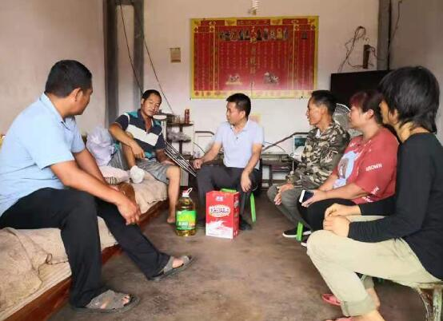

商务合作 QQ:340833389
抖音:28637558005  意见反馈
意见反馈
-
-
接好“接力棒” 跑好“接力赛”元谋法院乡村振兴工作队员活跃农村
连日来，云南省元谋县人民法院派驻该县平田乡新昌村委会的乡村振兴工作队员活跃在村组一线。他们走村串户，深入田间地头察民情、听民声，为党员宣讲党史、向群众宣传政策，参与整治环境卫生，为群众解难题，参与化解矛盾纠纷……不断拉近与村民群众之间的距离，密切党群干群关系，较快地实现从“法官”到“村官”的角色转换。
2021年5月18日，带着院党组的谆谆嘱托和殷殷期望，该院派驻挂点的平田乡新昌村委会乡村振兴的工作队员在党组成员、副院长王明刚同志的护送下，冒着高温酷暑来到该县平田乡新昌村委会报到，与新昌村“三委”班子成员见面并亲切交谈，共谋巩固脱贫攻坚成果和实施乡村振兴战略发展大计。“我们村委会的土地流转、邻里之间、婚姻家庭、赡养老人和财产继承等方面的矛盾纠纷比较多，我们村组干部要用大量的时间和精力来处理这些问题。非常感谢县法院给我们送来法律专家，以后我们在化解矛盾纠纷方面将有更大的起色，振兴乡村工作我们充满信心！” 平田乡新昌村党总支书记、村委会主任杨怀东高兴地说。

驻村后，工作队员们一边学习中央和省州县关于巩固脱贫攻坚成果和实施乡村振兴战略的有关政策，一边查阅各村组脱贫攻坚的档案资料，沉下身子与村组干部同吃同住同劳动，多管齐下，尽力实现巩固拓展脱贫攻坚成果与实施乡村振兴战略有效衔接。驻村队员们表示，将以政法队伍教育整顿和党史学习教育为契机，时刻牢记自己肩负的重任和光荣使命，锤炼党性，克服困难，以党建引领农村经济社会高质量跨越发展，继续巩固脱贫攻坚成果，扎扎实实做好乡村振兴工作。
今年以来，元谋县人民法院在圆满完成该县江边乡盐水井村委会金马村民小组的脱贫攻坚任务后，为认真贯彻落实党中央和省州县关于巩固脱贫攻坚成果和实施乡村振兴战略的决策部署，该院党组高度重视选派乡村振兴工作队驻村帮扶工作，党组书记、院长卢云峰同志及时召开专题会议研究，精心选派政治素质好、工作能力强、工作作风过硬、敢于担当作为、善于做群众工作，并具有开拓创新精神、事业心和责任感强、不怕吃苦、甘于奉献的1名实职科级党员领导干部担任第一书记和1名年轻党员干警，与县卫健系统派驻的1名党员干部精锐出征，全力以赴驻村帮扶挂点的平田乡新昌村委会巩固脱贫攻坚成果，在兴产业、育人才、增收入、净环境、活文化等乡村振兴工作中迈好步，开好局，努力激发挂点村干部群众的内生动力，全力推进乡村振兴工作，真真切切让农业产业兴起来、让乡土人才强起来、让农民群众富起来、让农村环境美起来、让乡村文化活起来。
作者：田文忠 单位：元谋县法院派驻平田乡新昌村委会工作队
-